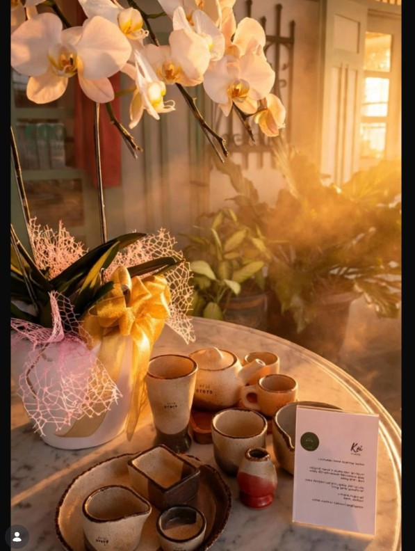
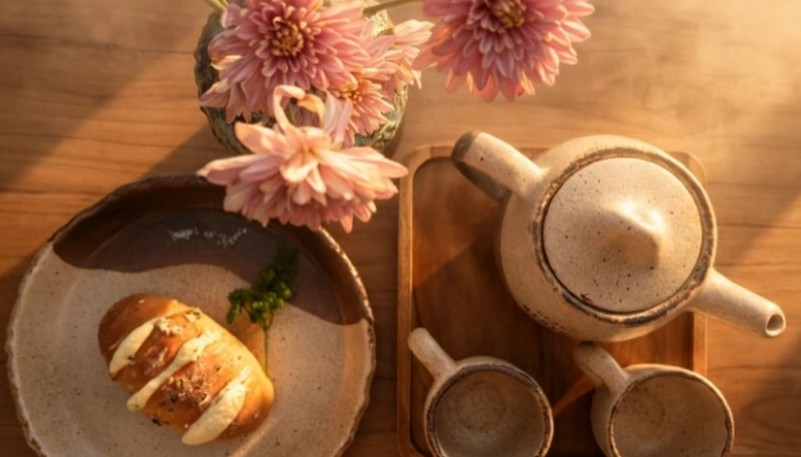
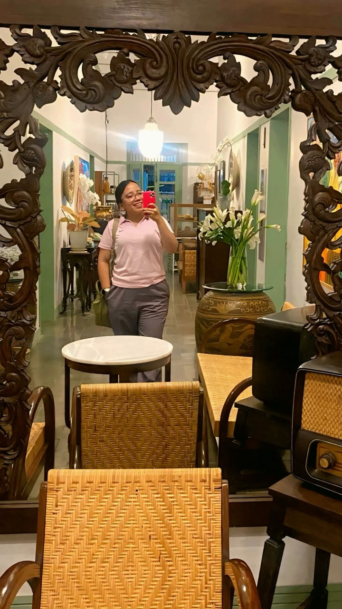
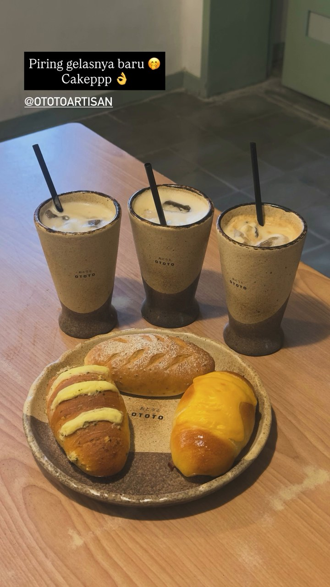
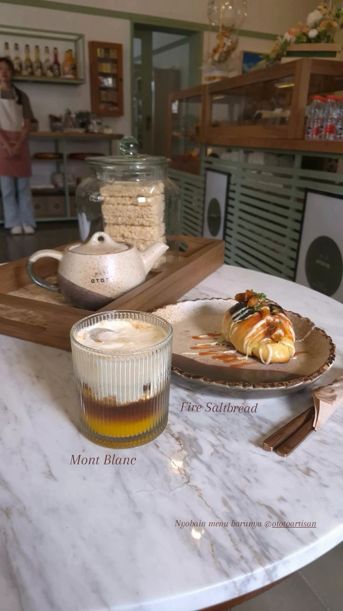

The HeritageSpace & details
More than bread & coffee.
A place to slow down, share something good, and feel at home. Inspired by the warmth of familiar places and the quiet beauty of memories.
 OTOTOARTISAN BREAD & COFFEE
OTOTOARTISAN BREAD & COFFEE
Selamat menikmati masa lalu. A warm place for bread, coffee, and familiar memories.
Discover OTOTO →A place to slow down, share something good, and feel at home. Inspired by the warmth of familiar places and the quiet beauty of memories.
Roti, kopi, dan waktu yang dinikmati tanpa terburu-buru.

Freshly baked moments

A cup to feel at home

Warm light, familiar tableware, thoughtful details, and a welcoming space. OTOTO brings together the feeling of yesterday and the comfort of today.
Small moments, shared around the table.




A few quiet glimpses of the place, the people, and the things we make.
More moments and updates on Instagram @ototoartisan ↗
A visual diary of OTOTO, collected from the stories shared with our community.




Discover the current moments and offers at OTOTO. Follow our Instagram for the latest updates.
Follow Instagram ↗
We would love to welcome you.